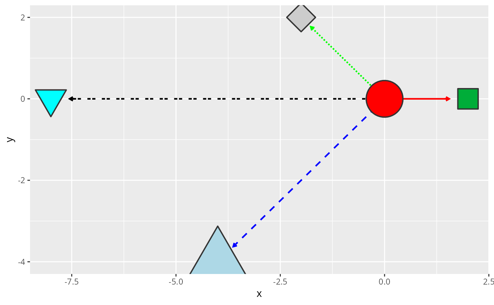
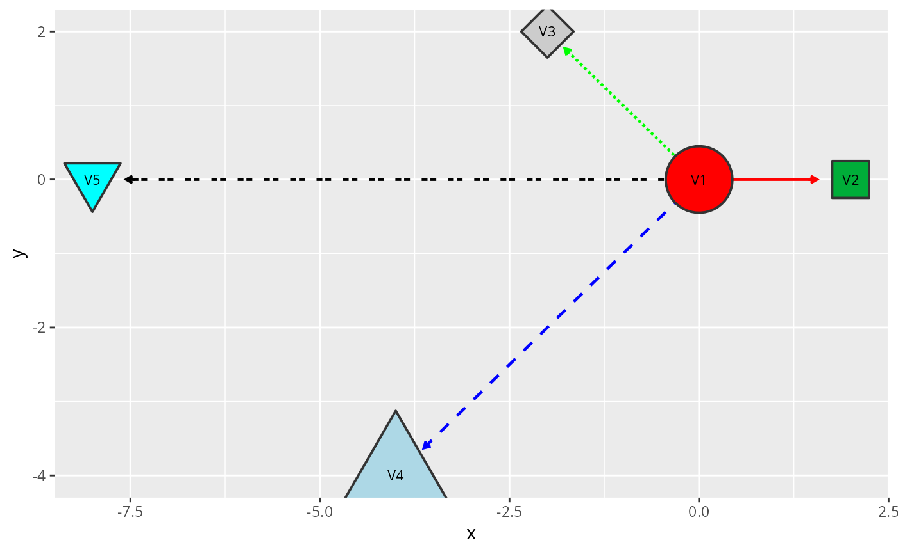
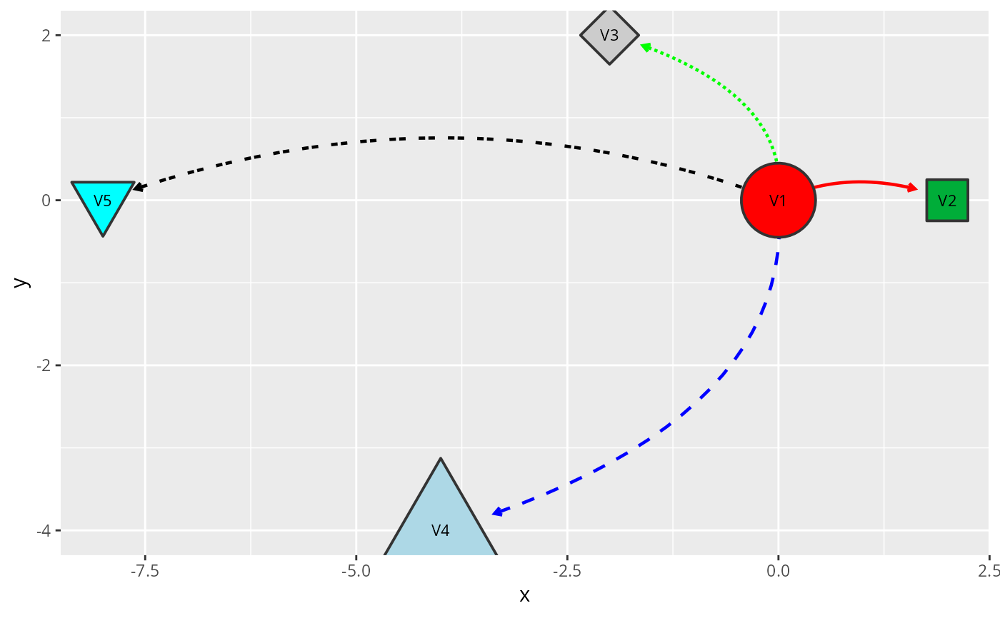

geom_graphspace() adds both node and edge layers to a ggplot2
plot by calling geom_nodespace and geom_edgespace
in sequence. It is a convenience wrapper with no logic of its own; any
argument accepted by either underlying geom can be passed via
node.params or edge.params.
For independent control of node and edge layers, use
geom_nodespace and geom_edgespace directly.
Arguments
- mapping
An optional
aescall passed togeom_nodespace. The most common use is supplying node label aesthetics, e.g.aes(label = nodeLabel).- node.params
A named list of additional arguments forwarded to
geom_nodespace.- edge.params
A named list of additional arguments forwarded to
geom_edgespace.
Value
A list of two ggplot2 layers, which ggplot2
flattens automatically when added to a plot with +.
Examples
library(ggplot2)
data("gtoy1", package = "RGraphSpace")
gs <- GraphSpace(gtoy1)
#> Validating the 'igraph' object...
#> Ignoring graph-level attributes: 'name', 'mode', 'center'
#> Creating a 'GraphSpace' object...
# Simplest use
ggplot(gs) + geom_graphspace()

# With node labels
ggplot(gs) + geom_graphspace(aes(label = nodeLabel))

# With independent node and edge customization
ggplot(gs) + geom_graphspace(
node.params = list(aes(label = nodeLabel)),
edge.params = list(curve = 0.3)
)
